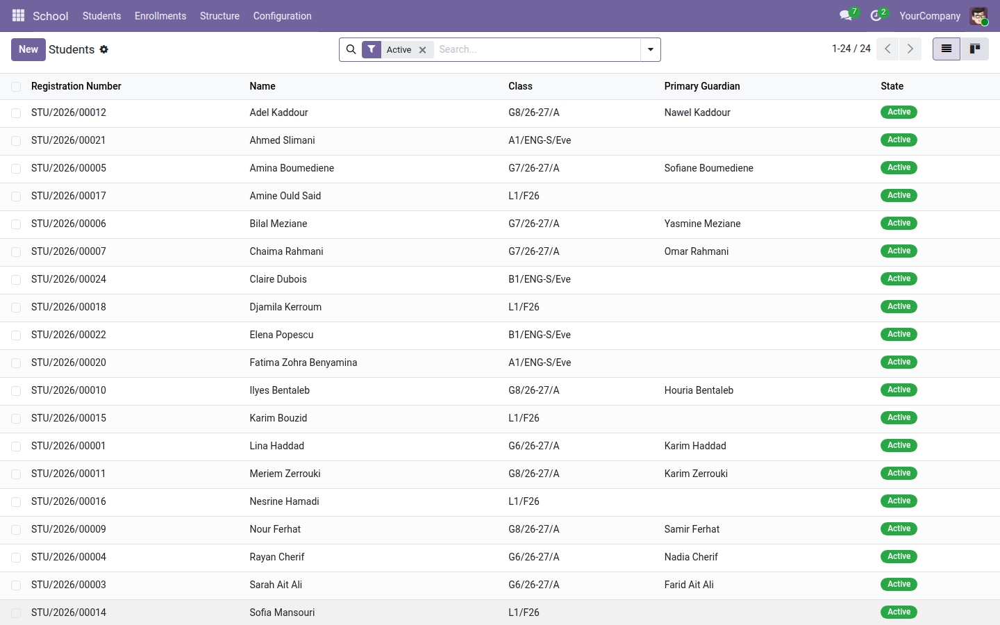
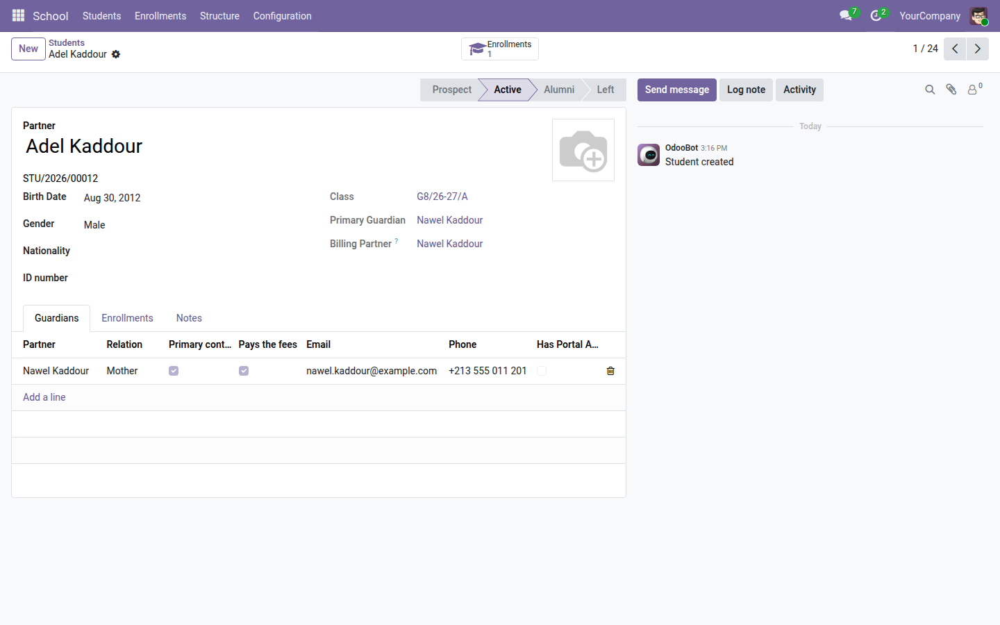
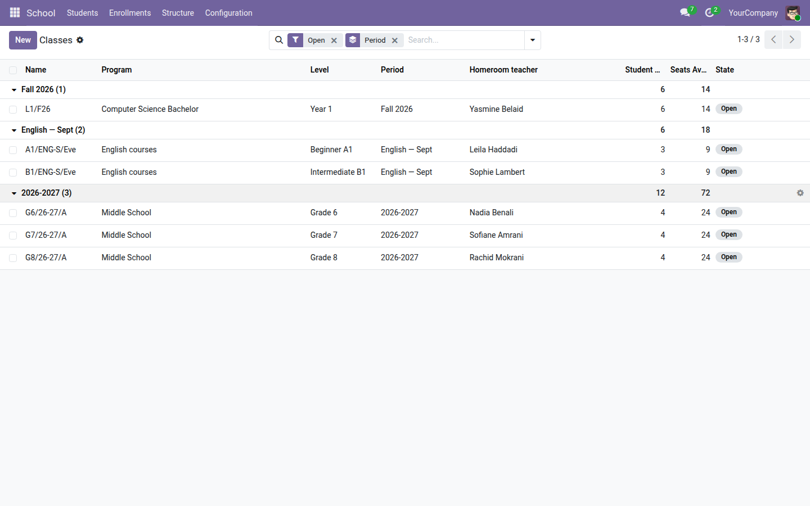
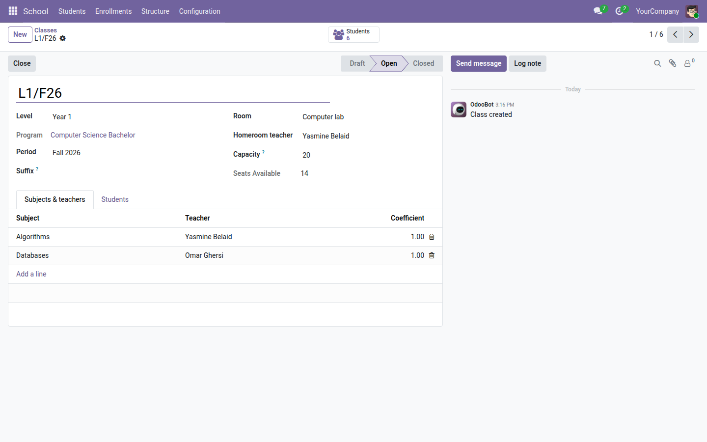
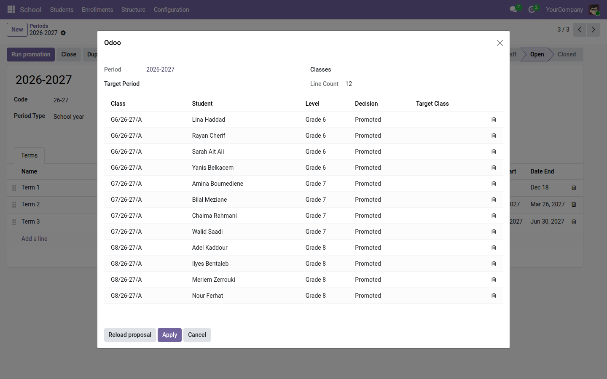

École — élèves, classes, inscriptions
Gérez une école privée dans Odoo Community : l'année, les programmes et les classes, les élèves et leurs tuteurs, les enseignants, les inscriptions avec contrôle des places et le passage d'année en un assistant — pour le primaire, le collège, le lycée, le supérieur, un centre de langues ou de formation.
Une école privée vit dans des tableurs : une feuille par classe, une autre pour les parents, une troisième pour les paiements — et chaque rentrée, tout est recopié à la main. Qui est inscrit où, reste-t-il des places en 6ᵉ A, quel parent prévenir, qui passe en classe supérieure ? Odoo sait gérer des contacts, des factures et des documents, mais il ne connaît ni l'élève, ni la classe, ni l'année scolaire. Ce module lui apprend.
Ce que ça apporte
- 🏫 Un seul cœur pour tous les types d'école — chaque programme porte son cycle (primaire, collège, lycée, supérieur, langues, formation professionnelle) et en hérite les bons réglages : année scolaire ou session courte, passage par niveau, par crédits ou manuel.
- 📅 Périodes et trimestres — année, semestre ou session ; un assistant génère les trimestres ; la structure d'une année se duplique vers la suivante en un clic.
- 👨👩👧 Élèves et tuteurs — matricule automatique, fiche élève avec photo, dates, nationalité ; tuteurs avec lien de parenté, contact principal et payeur des frais ; tout s'appuie sur les contacts Odoo.
- 🪑 Inscriptions avec contrôle des places — capacité par classe, places restantes calculées, refus quand la classe est pleine (dérogation possible), retrait motivé, tuteur obligatoire selon le programme (activé d'office pour le primaire, le collège et le lycée).
- 🔁 Passage d'année en un assistant — propose admis / redoublant / parti pour toute une période, classe cible trouvée automatiquement, décision modifiable ligne par ligne avant application.
- 👩🏫 Enseignants et matières — professeur principal par classe, matière par matière avec coefficient ; un enseignant ne voit que ses classes.
- 📄 Deux documents prêts — certificat de scolarité et liste de classe en PDF.
- 🔒 Trois rôles et multi-sociétés — enseignant, secrétariat, direction ; chaque établissement d'un groupe ne voit que ses données.
En images
1. Les élèves, leur classe et leur tuteur principal
La liste répond à la question de tous les jours : qui est inscrit, dans quelle classe, et qui appeler.

2. La fiche élève
Matricule, classe courante, tuteurs avec leur rôle (contact principal, payeur), historique des inscriptions et fil de discussion.

3. Les classes, par période, avec les places restantes
Un semestre universitaire, une session de langues et une année de collège cohabitent dans la même base.

4. La classe : salle, professeur principal, matières et coefficients
La capacité et les places restantes sont visibles d'un coup d'œil ; le bouton « Élèves » ouvre la liste des inscrits.

5. Le passage d'année
Depuis la période, l'assistant propose une décision par élève ; on corrige les cas particuliers, puis on applique : les inscriptions de l'année suivante sont créées.

Pourquoi l'adopter
- Gratuit, sans limite d'élèves ni de classes, sur Odoo Community.
- Les élèves et tuteurs sont des contacts Odoo : factures, courriels et documents s'y branchent naturellement.
- Conçu comme socle : les modules payants de la suite s'y greffent sans le modifier.
- Livré avec des données de démonstration (collège, licence informatique, cours d'anglais du soir) et une traduction française complète.
Cœur de la suite École
Étendez ce cœur gratuit avec Portail élève & parents, Admissions (candidatures et inscription en ligne), Frais de scolarité (échéanciers, facturation et paiement en ligne), Emploi du temps, Présences, Notes & bulletins, Espace enseignant, Tableau de bord et Communication. Suite complète sur apps.odooskills.com.
Licence LGPL-3 — compatible Odoo 19.0 Community. Support : support@odooskills.com.